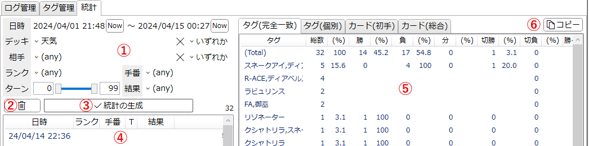
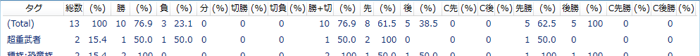

「統計」タブ
対戦履歴の統計機能を利用するためのタブです。
対戦相手ごとの戦績と、手札に引いたカードごとの戦績をまとめることができます。
このタブで設定した内容はアプリ設定に記憶され、次回以降の起動時に復元されます。
説明

-
検索条件指定
- 統計の対象とするログの条件を指定します。
- (any)となっている項目は、その項目について絞り込まないことを意味します。
-
「デッキ」及び「相手」のタグは複数選択できますが、その際のマッチ方法を右のコンボボックスで指定します。
詳細

-
以下のような条件を想定します。
- ログ1: デッキタグに「B」が指定されている。
- ログ2: デッキタグに「A」「B」が指定されている。
- ログ3: デッキタグに「A」「C」が指定されている。
- ログ4: デッキタグに「A」「B」「C」が指定されている。
- 検索条件1:「A」「B」が指定されている。
- 検索条件2:「A」が指定されている。
-
いずれか: 検索条件タグのうち、いずれか1つ以上を含むログがヒットします。
- 検索条件1に対して、全てのログがヒットします。
- 検索条件2に対して、ログ1以外がヒットします。
-
全て含む: 検索条件タグを全て含むログがヒットします。
- 検索条件1に対して、ログ2とログ4がヒットします。
- 検索条件2に対して、ログ1以外がヒットします。
-
最小一致: 検索条件に含まれないタグを持たないログがヒットします。
- 検索条件1に対して、ログ1とログ2がヒットします。
- 検索条件2に対して、どのログもヒットしません。
-
完全一致: 検索条件と全く同じタグを持つログがヒットします。
- 検索条件1に対して、ログ2のみがヒットします。
- 検索条件2に対して、どのログもヒットしません。
- すなわち、「全て含む」と「最小一致」の両方にヒットするようなログがヒットするということです。
-
以下のような条件を想定します。
-
検索条件初期化ボタン
- 検索条件の内容を初期化します。
-
統計の生成
- 指定された条件でログを絞り込み、条件に該当するログに関する統計データを生成します。
- 条件に該当したログは下のリストに表示されます。
- 生成された統計データは右のリストに表示されます。
-
絞り込みログリスト
- 「統計の生成」をした後、検索条件に該当したログはこのリストに一覧されます。
-
統計エリア
- 生成された統計データが表示されます。
- ヘッダー(「総数」などが書かれている部分)をクリックすると、それを基準として項目をソート(並べ替え)します。
- 各列の意味は下記統計の列を参照してください。
-
タグ(完全一致): 「相手」に指定されたデッキタグについて、タグの組み合わせごとの統計を表示します。
- 例えば、タグ「A」「B」が指定された相手と「A」のみが指定された相手は、異なる項目になります。
- 自分の使用デッキについては区別されません。使用デッキごとの統計を確認したい場合は、検索条件の時点で絞り込んでください。
-
タグ(個別): 「相手」に指定されたデッキタグについて、タグそれぞれの統計を表示します。
- タグ「A」「B」が指定された相手との対戦結果は「A」と「B」の両方に計上されます。
- 複数のタグを持つログがある場合、「総数」の総和は(Total)行の「総数」よりも多くなります。
-
カード(初手): 「初期手札」に含まれた各カードについての統計を表示します。
- 例えば、ある「コイン勝ち先攻、勝ち」のログについて、その「初期手札」に含まれていた各カードに対して「コイン勝ち先攻」と「勝ち」がそれぞれ1回ぶんとして計上されます。
- 一つのログに対しては、各カード最大1回のみ計上されます。初期手札に同名カードが複数枚あったとしても、統計に反映されるのは1枚分のみです。
- あるカードの行に表示されるのは、そのカードが初期手札に含まれていた対戦での戦績の統計です。あくまで相関を表すのみであり、「勝因」とは限らないことにご注意ください。
- 「カード」のヘッダーをクリックするとインデックス(デッキのカードリストと同じ)順に並びます。
- カード(総合): 「初期手札」に加えて「追加手札」に含まれたカードについても計上します。
-
コピー
- 表示されている統計データをタブ区切りの文字列としてクリップボードに送ります。
- この内容はMicrosoft Excelなどのスプレッドシートに直接貼り付けられます。
- コピーされるのは、ボタンを押した時点で選択されているタブの内容です。ソート状態も反映されます。
統計の列

-
Total行: 「タグ(完全一致)」と「タグ(個別)」に表示される(Total)と書かれた行は、検索条件に該当した全てのログについての統計が表示されます。
- 相手を問わない全体の勝率等についてはこの行を参照してください。
- 総数: その項目に該当するログの個数です。
- 勝: 「結果」が「勝ち」に設定されたログの個数です。
- 負: 「結果」が「負け」に設定されたログの個数です。
- 分: 「結果」が「引き分け」に設定されたログの個数です。
- 切勝: 「結果」が「切断(勝)」に設定されたログの個数です。
- 切負: 「結果」が「切断(負)」に設定されたログの個数です。
- 勝+切: 「結果」が「勝ち」または「切断(勝)」に設定されたログの個数の合計です。
- 先: 「手番」が「コイン表 / 先攻」に設定されたログの個数です。
- 後: 「手番」が「コイン裏 / 後攻」に設定されたログの個数です。
- C先: 「手番」が「コイン裏 / 先攻」に設定されたログの個数です。
- C後: 「手番」が「コイン表 / 後攻」に設定されたログの個数です。
- 先勝: 「手番」が「コイン表 / 先攻」に設定されたログのうち、結果が「勝ち」である個数です。
- 後勝: 「手番」が「コイン裏 / 後攻」に設定されたログのうち、結果が「勝ち」である個数です。
- C先勝: 「手番」が「コイン裏 / 先攻」に設定されたログのうち、結果が「勝ち」である個数です。
- C後勝: 「手番」が「コイン表 / 後攻」に設定されたログのうち、結果が「勝ち」である個数です。
-
各項目には、該当するログの個数を表示する列と、その数の全体に対する割合をパーセント単位で表示する列があります。
- ヘッダーに(%)と書かれている列は、その左隣の列の割合を示します。
- 視認性のため、値が0のデータに対しては割合は表示されません。
- 「総数」の割合表示の分母は検索条件に該当したログの個数(=(Total)行の「総数」)です。
-
「勝」「負」「分」の割合表示の分母は、該当ログの「総数」から「切断」の個数を引いたものです。
- つまり、切断によって終了した(と設定された)試合は勝ちにも負けにもカウントしません。
- 先攻1ターン目での即サレなど、戦績に含めたくない試合では結果を「切断(勝ち)」扱いにしておくとよいです。
-
「切勝」「切負」「勝+切」「先」「後」「C先」「C後」の割合表示の分母は、該当ログの「総数」です。
- これらの分母には切断によって終了した試合も含まれます。
-
「先勝」の割合表示の分母は、「先」から結果が「切断」の数を引いたものです。「後勝」「C先勝」「C後勝」についても同様です。
- これらの分母には切断によって終了した試合は含まれません。